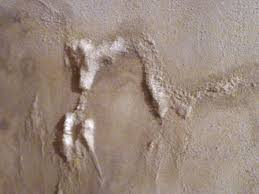
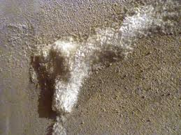
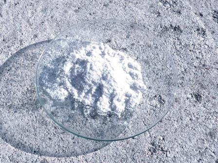

Lessi qualche anno fa un bellissimo saggio sull'antica "coltivazione" del salnitro (nitrato di potassio, KNO3), il componente essenziale per la fabbricazione della vecchia polvere nera da sparo.
Si evidenziavano in quel saggio la difficoltà, la macchinosità ed il lungo tempo necessario per procurarsi un po' di quel magico sale; magico perchè dal XIII al XIX secolo era l'unico prodotto chimico che poteva soddisfare al meglio uno dei bisogni primari dei popoli: farsi reciprocamente la guerra.
E' noto infatti che anche intorno al Mediterraneo è molto meglio morir di fame che rinunciare ad avere in tasca una buona sana cartuccia di Kalashnikov.
E l'ingegnosità messa in atto dagli uomini pur di non venir meno a questo idiota bisogno esistenziale ha del meraviglioso.
Dicevo dunque che è complicatissimo "fare" il salnitro come lo si faceva una volta: oltre ad un particolare locale umido, ci vogliono sostanze azotate in decomposizione che forniscano ammoniaca ossidabile, sali di potassio, un substrato adatto, tantissimo tempo e giusta procedura, eccetera, eccetera... EPPURE tutti sono convinti che il salnitro venga quasi da solo: un vecchio muro, una incrostazione salina... ed eccolo!
Le persone con le quali mi è capitato di soffermarmi in qualche occasione su questo argomento erano convinte (e probabilmente lo sono ancora) che quelle efflorescenze saline che si formano talvolta sui muri umidi delle cantine non potessero essere altro che SALNITRO.
Sembra quasi che per tradizione ancestrale si sia tramandato solo il primo requisito per la formazione del KNO3: un locale umido, e tanto basta!
Questa condizione è necessaria, ma non è certo sufficiente (come vedremo magari un'altra volta).
In questo mese di luglio è piovuto nella mia zona per più di venti giorni (non ininterrottamente, altrimenti sarei sull'Ararat...) e allora quale migliore occasione per verificare cosa diavolo sia quella barba bianca in forma di rettile fossilizzato che sta attaccata al muro di una cantina alla quale ho accesso?


Ho voluto farla vedere a qualcuno e chiedere cosa fosse: SALNITRO, hanno risposto tutti senza la minima esitazione (naturalmente nessuno sapeva esattamente cosa significasse chimicamente questa parola).
Andiamo a vedere se lo è veramente.
Una grattatina al muro ed ecco un bel campioncino di cristallini leggeri e vaporosi (sembrano acido salicilico) pronti a sacrificarsi per l'analisi.

Se è KNO3 deve lapalissianamente contenere il catione potassio e l'anione nitrato.
-Primo test: solubilità.
La sostanza è solubilissima in acqua: molto bene! Almeno si conferma che non si tratta di volgarissimo carbonato di calcio, ovvero calcare.
-Secondo test: alla fiamma.
Colorazione gialla intensissima, indice di sodio a profusione. E il potassio?
Potrebbe essere mascherato dal sodio, quindi mano al vetrino al cobalto e... niente che assomigli ad una colorazione violetta.
Ma allora il potassio non c'è?
-Terzo test: col cobaltinitrito di sodio.
Se c'è potassio deve formarsi un bel precipitato giallo, come abbiamo visto più volte su questo blog.
Tre goccette di cobaltinitrito e... niente precipitato!
Ma allora il potassio proprio non cè! Macchè, sembra proprio di no.
-Quarto test: con la brucina, per cercare i nitrati.
Non serve andar tanto per il sottile, SE è un nitrato alcalino deve formarsi alla grande una colorazione rossa nell'acido solforico, senza alcuna incertezza.
Esito? Negativo, neppure i nitrati ci sono!
Ma allora che salnitro del cavolo è? Infatti, come volevasi dimostrare è proprio un salnitro del cavolo... ovvero non è per niente KNO3.
Ma allora cos'è?
E' bianco e solubilissimo in acqua, e colora fortissimamente la fiamma come il sodio...
Ma se è un sale di sodio, con quale anione è legato questo metallo?
Non occorre andar a cercare chissà quale anione esotico, stiamo sul probabile.
-Quinto test: con cloruro di bario.
Bingo! Precipitato abbondantissimo di solfato di bario.
-Sesto test: con nitrato d'argento. Andiamo a vedere se magari ci sono anche i cloruri.
Una traccia di opalescenza, ma si può dire tranquillamente che nemmeno i cloruri ci sono.
Conclusione
Cos'è quella efflorescenza bianca cristallina, voluminosa e leggera che si abbarbica al muro della cantina grazie a quelle disgraziate piogge che mi tormentano da un anno e mezzo?
La risposta è chiara: Na2SO4.10H2O, ovvero banale SOLFATO DI SODIO decaidrato.
Niente salnitro sui muri allora?
Men che mai; come dicevo all'inizio il vero salnitro è difficilissimo a formarsi se non trova un ambiente esattamente adatto, soprattutto con TANTA ammoniaca in giro.
Per il solfato di sodio basta invece un banalissimo muro moderno in cemento posto all'umido.
Ma sono convinto che tutti, probabilmente anche coloro che leggeranno questa storiella, continueranno a chiamare queste incrostazioni col nome nazional-popolare che si trascina dai tempi della polvere nera: "salnitro"!
E intanto continua a piovere... pazzesco, fra un po' saranno praticamente venticinque giorni su trentuno. In luglio.